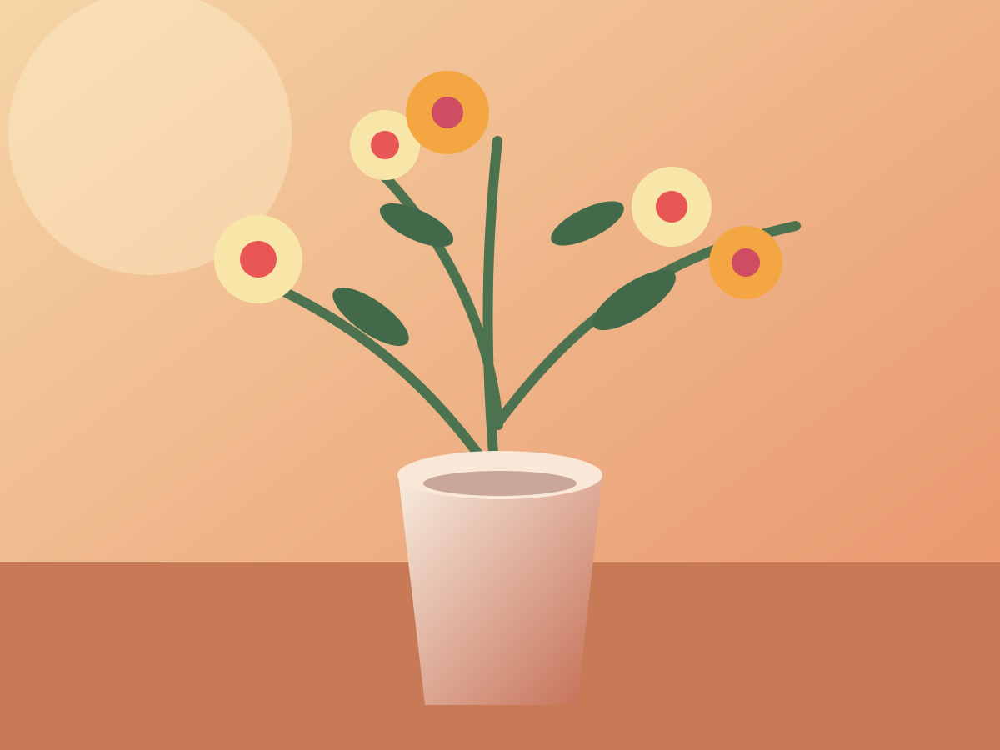
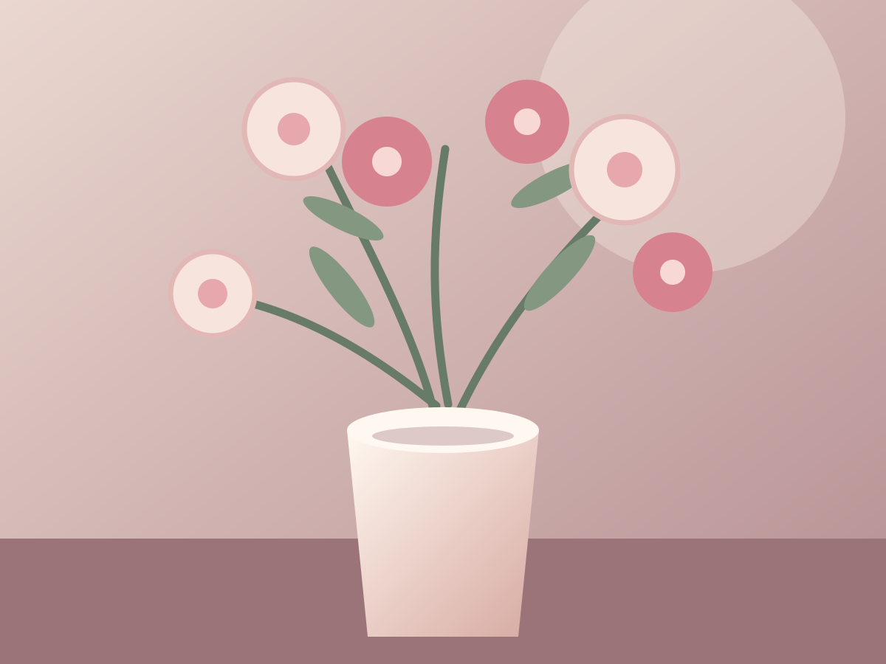
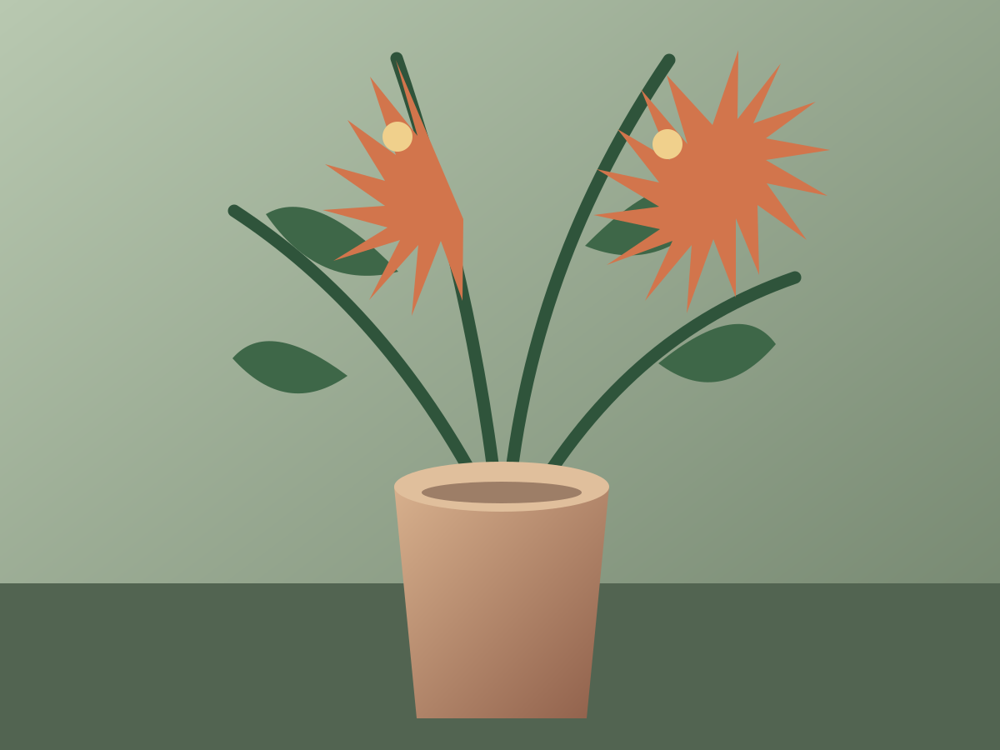

A little brightness
Kathmandu Sunrise
From $69A cheerful burst of seasonal colour and fresh foliage, made to brighten an ordinary day or celebrate a special one.
Ask me about itA thoughtful way to say what’s in your heart
Some feelings are hard to put into words. A hand-made bouquet can say happy birthday, thank you, I miss you, or simply, “I’m thinking of you.” Tell me what you’re celebrating, and I’ll help you find flowers that feel just right.
I choose what’s fresh and in season each week, so every bouquet has its own little differences.

A little brightness
A cheerful burst of seasonal colour and fresh foliage, made to brighten an ordinary day or celebrate a special one.
Ask me about it
A gentle celebration
Soft roses and delicate seasonal blooms, inspired by the gentle colours and warmth of home. Lovely for anniversaries and thank-you gifts.
Ask me about it
A thoughtful gesture
New Zealand natives and textural greenery, gathered into a relaxed arrangement to honour a memory or simply say, “I’m thinking of you.”
Ask me about itPrices are a guide. The flowers may change with the seasons, but I’ll always make your arrangement with care. Final pricing depends on the flowers and size you choose.
The little things matter
I can add a handwritten card with your own words, so your message arrives with something made by hand.
When words feel difficult, I’ll help you choose a gentle arrangement to remember someone or let a loved one know you’re there.
Tell me about a favourite colour, a special memory or the person you have in mind. I’ll suggest seasonal flowers to make it personal.